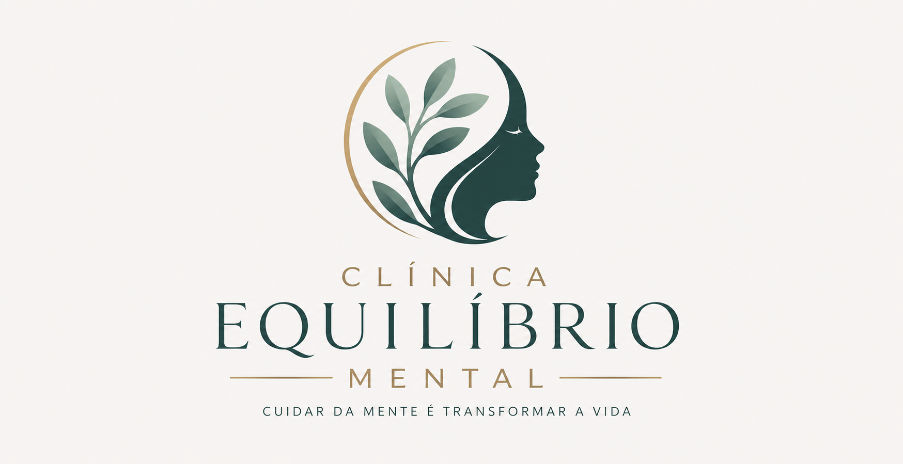

Atendimento com escuta acolhedora, sigilo e respeito ao seu momento, ajudando você a lidar melhor com ansiedade, estresse e sobrecarga emocional.
Agendar uma conversaProjeto fictício desenvolvido para portfólio. Informações profissionais demonstrativas.
Momentos de ansiedade, estresse, insegurança e cansaço emocional podem afetar a rotina, os relacionamentos e a forma como você se sente consigo mesmo. Buscar apoio psicológico é uma forma de cuidado e autoconhecimento.
Atendimento conduzido com atenção, ética e respeito à história de cada pessoa.
Um ambiente reservado para conversar sobre sentimentos, desafios e objetivos pessoais.
Sessões online ou presenciais, facilitando o acesso ao cuidado psicológico.
Acompanhamento psicológico para lidar com questões emocionais, pessoais e relacionais.
Sessões realizadas por videochamada, com praticidade, privacidade e segurança.
Apoio para compreender sentimentos, organizar pensamentos e desenvolver novas estratégias.
Você entra em contato pelo WhatsApp e escolhe o melhor horário disponível.
É realizado um primeiro encontro para compreender sua demanda e explicar o processo.
As sessões seguem de forma individualizada, respeitando seu tempo e necessidades.
A psicóloga Mariana Alves é uma profissional fictícia criada para este projeto conceitual de portfólio. O objetivo desta seção é demonstrar como uma página real poderia apresentar autoridade, acolhimento e informações profissionais de forma ética.
CRP 00/00000 — informação demonstrativa.
Psicóloga clínica
Atendimento online e presencial
Este projeto não promete cura, resultados garantidos ou substitui avaliação profissional. A página foi criada apenas como demonstração de portfólio para simular um site real na área da saúde mental.
Entre em contato para verificar disponibilidade de horários e formato de atendimento.
Falar pelo WhatsAppHorário fictício: segunda a sexta, das 8h às 18h
Localização fictícia: João Pessoa - PB